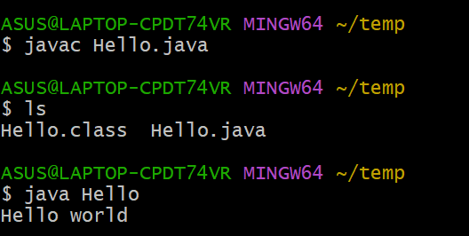
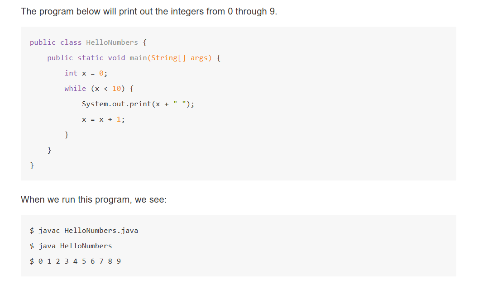

learning Java
run the first java program in shell
here shows how to run a java project in command line

using instruction "explorer ." can open the file folder we are now.
| the first program | |
|---|---|
1 2 3 4 5 | |
- in java, all codes live inside of class
- the code that is run is inside the method "main" and the main method is also in some class
- The name of class should be same with file name, for example, in hello.java you should write the hello class.
above is some basic rules of Java
some features like C
Java的基本语法与C/C++有一定的相似性，包括基础数据类型，判断语句，循环语句等等
variables and loops
use a small test and I don't repeat it again just give a screenshot here

here are some rules we can find above
- each variables should be given a type, which is like C
- the definition of loop is like C, 循环语句和C类似
- print(x+" ") is to prevent numbers from running into each other.
1 2 3 4 | |
java also provide way to enhance loop, which is called iterations, we will talk about the detail of it after.
1 2 3 4 5 6 7 8 9 10 11 12 13 14 | |
static types check
In java, all variables and expression have the static type
Its static type can never be changed, or we will have mistake during compiling.
As Java's language feature, static type is different from the type we usaully consider, and we will talk about the static type and dynamic type after.
And static type will make sure programmer know exactly what sort of object we are dealing with, which is a good feature indeed.
1 2 3 4 | |
And even the action that give 5.3 to a int variable is not allowed.
function
1 2 3 4 5 6 7 8 9 10 11 12 | |
public static int max(int a,int b);
it is a signature of the function, which contains parameters, return types, name, and any modifiers(修饰语，包括public 和 static)
arrays
the definition of arrays
1 2 3 | |
When you define an array, you will never use these two ways together.
For example, int[] numbers=new int [3]{2,3,5}; will cause an error.
the methods of arrays
1 2 | |
object
Object is the instance of the class.
1 2 3 4 5 6 7 8 9 10 11 12 13 14 15 16 17 18 19 20 | |
above is the basic class and the way to use it.
the variables without static is called instance variables or non-staic variables, so do method.(这些变量和方法不能脱离实例，不能只靠类使用，必须还依赖于对象
As a object oriented language, java has more features about object.
constructor
1 2 3 4 5 6 7 | |
array of objects
1 2 3 4 5 | |
static method and non-static method
The difference between these two methods is whether there is static or not in delcaration.
In other way, static method is class method
and non-static method is instance method
instance method can be taken only by specific instance of class.
sometimes, it is necssary for a class have static and non-static methods at the same time. For example
1 2 3 4 5 6 7 8 9 10 11 12 13 14 15 | |
A static function can be used by ClassName.MethodName(). And it can't access the non-static member of the class.
static variables
1 2 3 4 5 | |
In fact, we can access to this "binomen" by Dog.binomen or d.binomen. However, we highly recommend to use Dog.binomen only.
command line arguments
1 2 3 4 5 6 7 8 9 10 | |
reference type variables
In my opinion, the reference type is one of the most excellent designs in Java, it also makes Java truly different from C/CPP. So I want to talk about it in more detail.
what is variable
Each variable will have its memory address, type and its memory size.
Unlike programming language like C, we would never know the memory address of a variables in java.
It may cause a waste of effciencies, but it actually helps us avoid a lot of programming errors.
We can just write a declaration of a variable and don't write anything to it.
However, we cann't use these variables until we use "=" to fill its memory block.
primitive type and reference type
In java, there is eight primitive types. they are "int, double, byte, short, long, float, boolean, char"
Some other type like array and the class we desgin ourselves are not primitive type, they are called reference type.
In fact, Java provide the reference version for these primitive type, like "Integer" to "int". So what's the difference between these two type?
To an integer one, if it is "int" type, it may be "0000 0001" which expresses its true value "1" in binary way.
If it is "Integer" type, it will be an address, which points at an integer whose value is "1".
For the objects we design ourselves, they all have some additional overhead.(额外开销
1 2 3 4 5 6 7 8 | |
In fact, an object of Walrus will take memory block more than 32bits+64bits. However, for abstraction of java,
we should ignore this overhead.
an example of references variable
In fact, we declare a reference variable of any refernce type, java would give it 64-bit block, no matter how large your class is.
This 64-bit block don't contian the data of the variables, but contain the address of it, which means it is a pointer.
1 2 | |
The operator "new" will create a Walrus object by constructor Walrus(1000,53.8) and return its address.
Specially, we can use value "null" to reference variables, corresponding to all zeros
Now, we would see this situation
1 2 3 | |
b just copy the 64-bit block of a, so b and a all point at the same object.
parameter passing
When we pass parameters to function, we are just copying the bit, which means pass the value.
1 2 3 4 5 6 | |
In the example above, we have block for x and y at first, then in func, we will also create block a and b, and copy the value of x and y to them.
But if the type of parameter is reference type, it will copy the what this reference type contains, which is the pointer in fact.
So if we change the reference variable in the function, it will actually change the variable in the outside.
We all know that in cpp we usually need to write the copy constructor and overloaded the operator "=" because the copy of large object is a large waste of time.
But in Java, copy an object will never cost a lot time because we just copy its 64-bit address.
encapsulation
We can use public and private to control the accessibility of data.
For example
1 2 3 4 | |
In this cause, we can't use s.first to access the data memeber first.
Private variables and method can only be accessed by the code in the same .java file.
nested class
In java, we can delcare a class inside another class, for example
1 2 3 4 5 | |
We use nested class when the inside class only serve the enclosing class.
If we don't want the class IntNode to access the variables and method in SLList. We can declare "static" to it. Like below
1 2 3 4 | |
overload of function
The rules of overloading function is like cpp.
The functions should have different parameters.
Overload is good, but it also have many shortcomes, it may create many similar code blocks.
generics
We can use a name after your class name declaration and this name can replace the type
1 2 3 4 5 6 7 8 9 10 11 12 | |
Warning: If this IntNode is declared as "static", it can't use generics type name "myTypeName"
How to use the generics
1 | |
Important!
The generics grammar is only work with reference type so that we can't use primitive type like "int" or "double" in it.
So, we have some reference type to replace them like Integer and so on.
1 2 | |
package
this part is not completed yet
what is package
Package is a collection of java classes and work for the common goal.
For example, org.junit is a package for test code. "Assert" is a class in it which contains function like assertEqual
how to make a package
We should use keyword "package" in the top of the file to show that this file is belonging to the package
1 | |
throw exception
Here is an example of throwing exception in Java
1 2 3 4 5 6 | |
The exception is used to provide the error message and control to stop the flow of program instead of making the crash.